Transflex
Convoyeurs à palettes pour le transport des casiers sur de grandes longueurs.

Le convoyeur à palettes est le moyen le plus efficace pour transporter les pièces lourdes sur de grandes longueurs, avec ou sans virage.
Il permet d’assurer le débit maximum de la machine à laver lors d’une alimentation en continu. Il est particulièrement recommandé pour le concept laverie avec tri frontal, et en entrée ou sortie de Technilift (ascenseur / descenseur) pour casiers.
La chaîne articulée en acétal à maillons demi-lune, extrêmement robuste et sans recouvrement, évite tout coincement de doigt. Elle est disponible en 2 largeurs et 2 couleurs.
La conception a été entièrement pensée pour une hygiène parfaite : chaîne extractible de sa goulotte sans outil, car sans tension. Entretien quotidien aisé : lavage au jet, goulotte étanche d’évacuation des déchets et tiroirs filtres à chaque extrémité.
Source : Fiche Transflex (PDF Sopacom)
Seules les informations figurant dans les documentations Sopacom sont reprises. Les points demandés mais non documentés sont signalés « à confirmer ».
| Usage | Transport des pièces lourdes sur grandes longueurs, avec ou sans virage |
|---|---|
| Débit | Assure le débit maximum de la machine à laver en alimentation continue |
| Recommandé pour | Concept laverie avec tri frontal · entrée ou sortie Technilift pour casiers |
| Chaîne | Articulée, en acétal, maillons demi-lune, sans recouvrement |
| Déclinaisons | 2 largeurs · 2 couleurs |
| Hygiène | Chaîne extractible de sa goulotte sans outil (sans tension) |
| Entretien | Lavage au jet · goulotte étanche d’évacuation des déchets · tiroirs filtres à chaque extrémité |
| Variantes | Cardanflex : chaîne à os ou cardan · Clicflex : cliquets et rouleaux |
| Option | Tunnel de prélavage en entrée machine (pré-wash) |
| À communiquer | Type de machine et vitesses d’avancement |
Source : Fiche Transflex (PDF Sopacom)
Transflex en situation.
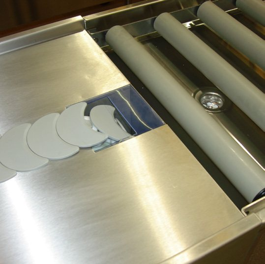
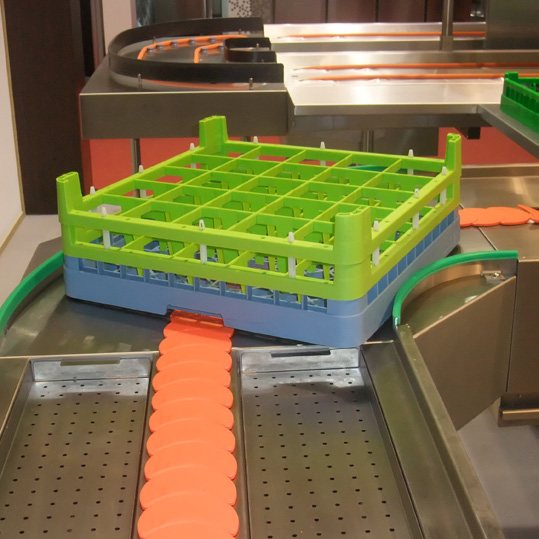
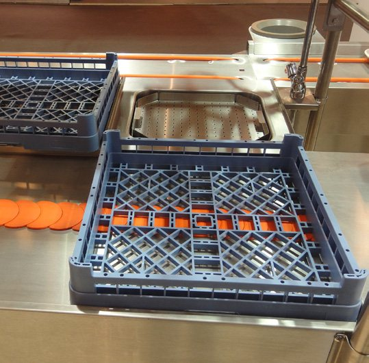
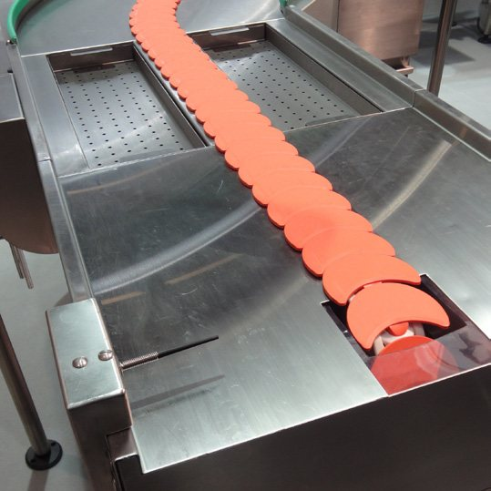
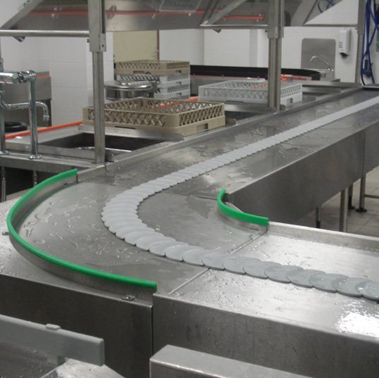
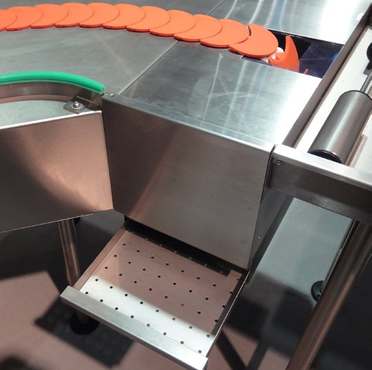
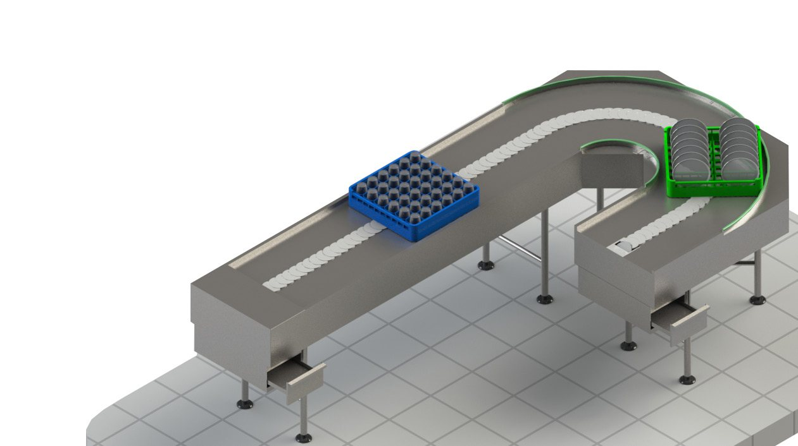
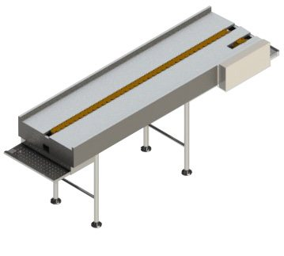
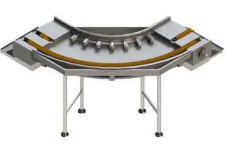
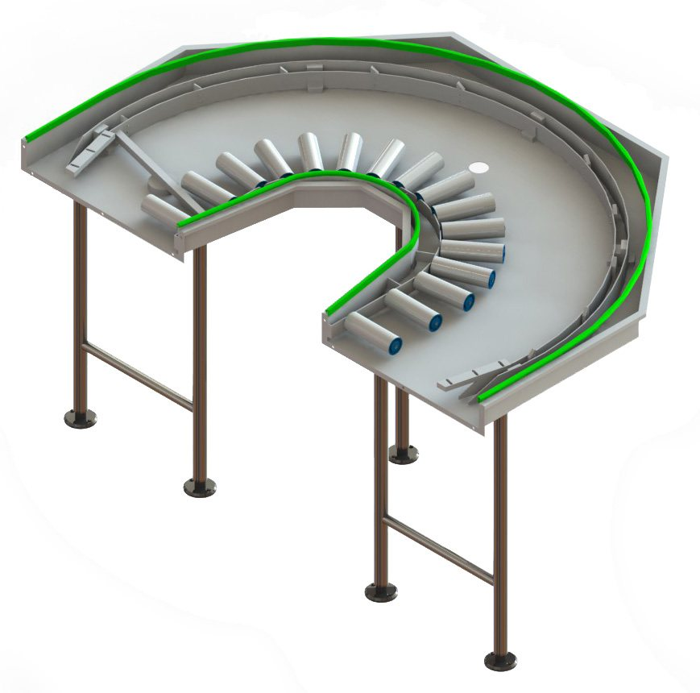
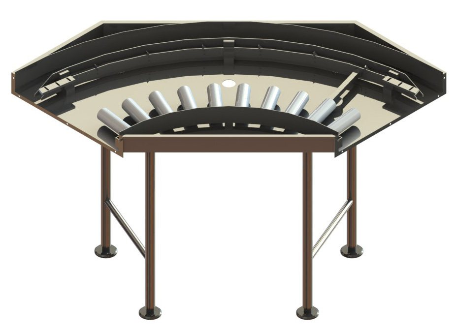
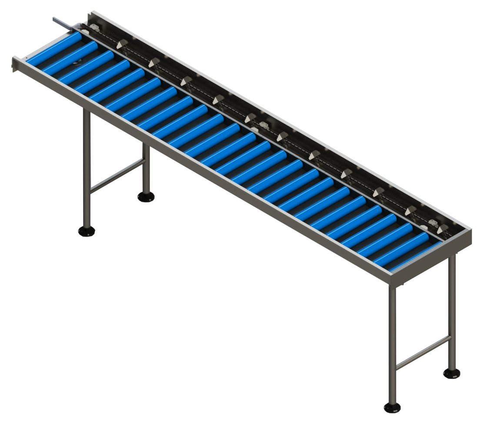
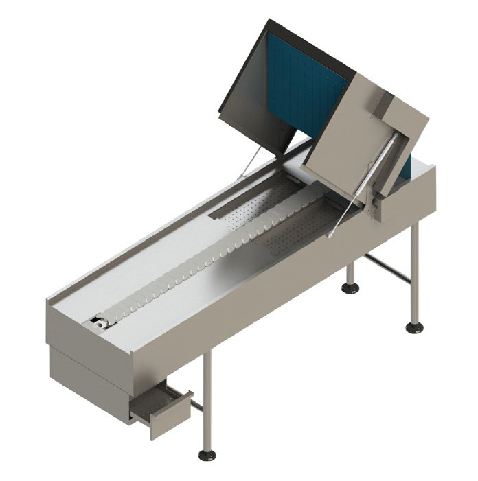
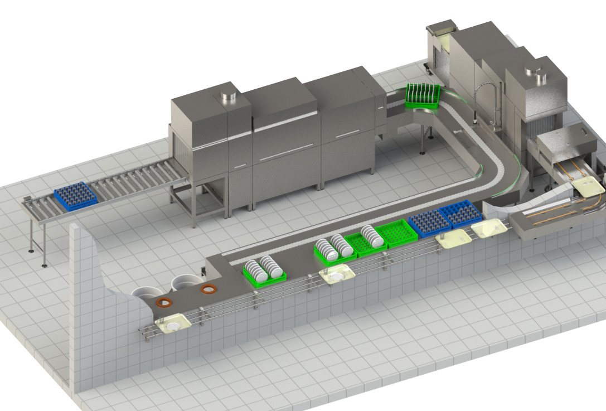
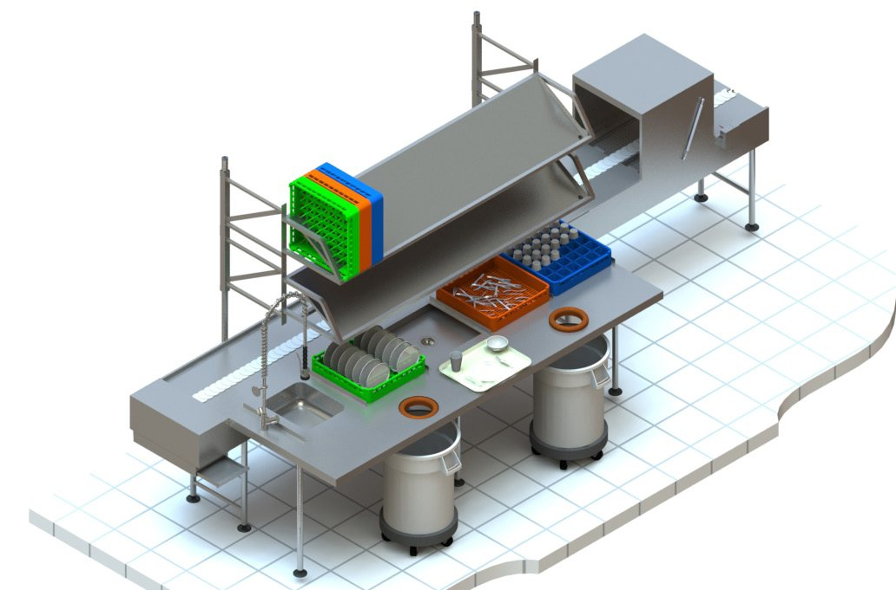

S’intégrer à l’ensemble de la laverie.
Technilift
En entrée ou sortie de Technilift (ascenseur / descenseur) pour casiers.
Source : Fiche Transflex (PDF Sopacom)
En savoir plus →Transroll
Le Transflex peut se raccorder avec divers produits de la gamme (Transroll, Technilift…).
Source : Fiche Transflex (PDF Sopacom)
En savoir plus →Tri frontal
Particulièrement recommandé pour le concept laverie avec tri frontal.
Source : Fiche Transflex (PDF Sopacom)
En savoir plus →19 blocs AutoCAD Transflex.
Extraits de la bibliothèque CAO Sopacom : chaque bloc est consultable en plan et téléchargeable au format DWG.